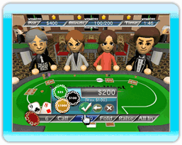
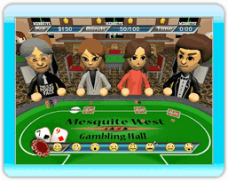

15 |
In-Game Play |
 |

When you begin a 'Free Play' or 'Tournament' game in either local or Nintendo WFC modes, you'll immediately be taken to the poker room to begin play. At the top of your screen is where you'll be able to see the current table pot, blind levels and time left in the round.
At the bottom of your screen is where you'll be making all of your gaming decisions. When it is your turn to play, you'll be presented with the options to Call/Check, Fold, Raise or go All-In. The value listed in the box next to Call/Check is how much it will cost you to call and stay in the game.
 When you are waiting for others to make a decision, the selection bar will become a status bar for you to follow along with. It will display what decisions players are making, whether it be a fold, call, raise or all-in move. You'll also notice an image of a smiley face at the very left of this bar. Selecting this icon will let you express your emotions to the table and perhaps let others know how you feel about your hand, or maybe even bluff them in to thinking you have an exceptional hand!
Should you wish to end your game at any time, select the + Button to do so. |
 |
 |
 |